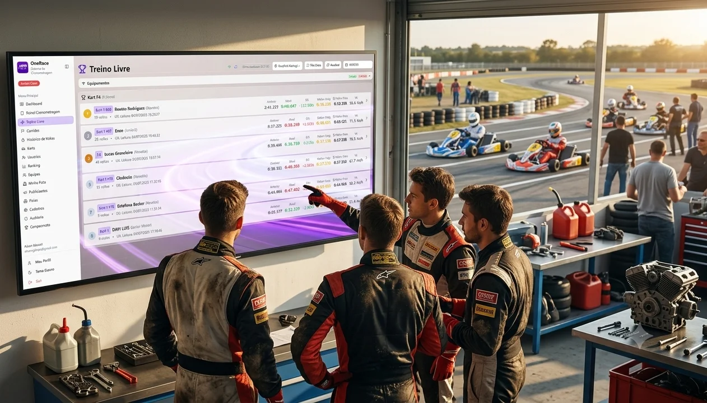
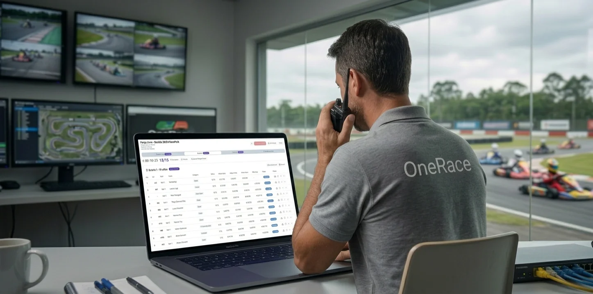
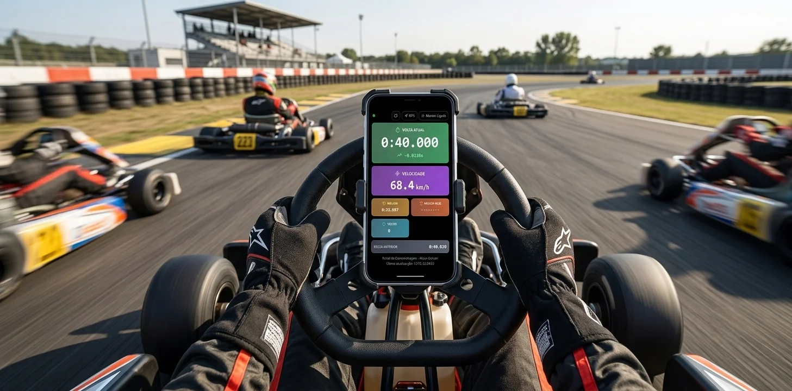

One Race

💠 One Race – Sistema de Cronometragem e Gestão de Corridas
O One Race é uma plataforma completa de cronometragem e gestão de corridas, hoje em uso real em pistas de kart. Feito do zero à produção, um hardware captura o sinal dos karts, processa os tempos de volta e os envia ao sistema em nuvem que transforma esses dados em rankings, corridas, pontuação e relatórios em tempo real para pilotos, equipes e administradores.
O sistema substitui cronometragem manual e planilhas improvisadas em pistas, com clientes reais utilizando o One Race no dia a dia das corridas, evitando falhas humanas e ajudando os pilotos e equipes a desempenharem melhor com base nos dados de cada volta.
Acesse em onerace.com.br.
🚀 Da pista para a nuvem: como funciona a cronometragem em tempo real
Cada kart carrega uma TAG de cronometragem vinculada ao piloto e ao kart dentro do sistema. Quando o kart passa pelo sensor na pista, esse evento é capturado pelo hardware, processado de forma offline por um sistema integrado, e enviado a um servidor em nuvem, que valida a leitura, descarta eventuais duplicatas causadas por leituras sequenciais do sensor e converte o evento em uma volta oficial, atualizando automaticamente a posição do piloto na corrida e alimentando rankings.
Todo esse processamento acontece em milissegundos, e o resultado é propagado em tempo real para todas as telas conectadas: paineis de operador, paineis de cronometragem do piloto, telão de acompanhamento ao vivo e telas para o diretor de prova para o auxiliar em decisões. Tudo isso sem qualquer necessidade de recarregar a página.

🏗️ Decisões de arquitetura e engenharia
Cada escolha técnica foi pensada para equilibrar velocidade de desenvolvimento com robustez de verdade, afinal existem clientes reais dependendo do sistema durante uma corrida ao vivo. Alguns dos pontos mais importantes:
- SPA + BaaS: optei por um front-end React/TypeScript consumindo um backend completo em nuvem (banco de dados, autenticação, tempo real, armazenamento de arquivos e funções serverless), o que me permitiu, atuando sozinho, manter velocidade de entrega sem abrir mão de manter as regras de negócio no lugar certo: no servidor, não espalhadas pelo cliente.
- Controle de acesso por papel: perfis como administrador de pista, administrador de equipe e piloto têm suas permissões garantidas diretamente no banco de dados, e não apenas pela interface. Isso garante que, por exemplo, um administrador de pista só consiga enxergar e alterar os dados da sua própria pista, mesmo que o sistema fosse acessado de outra forma.
- Motor de pontuação configurável: cada pista define sua própria tabela de pontos por posição, bônus de pole position e volta mais rápida, e penalizações por infração. Essa regra de negócio é centralizada no servidor, garantindo que o resultado final da corrida seja sempre calculado de forma consistente e auditável.
- Confiabilidade da cronometragem: validações automáticas evitam a contagem duplicada de voltas por ruído do sensor, e um mecanismo de reprocessamento permite recuperar e recalcular voltas que, por qualquer motivo, não tenham sido processadas corretamente. Um cuidado importante em um sistema que lida com hardware físico em campo.
- Relatórios e comunicação: geração de relatórios completos em PDF direto no navegador e envio automático por e-mail, para que pistas e pilotos recebam o resultado oficial da corrida sem esforço manual.
- Aplicativo instalável (PWA): o sistema funciona como um app instalável no celular, permitindo que operadores de pista o usem como um aplicativo nativo sem depender de lojas de aplicativos.
🔌 Integração com o hardware
Além do sistema em nuvem, também arquitetei e desenvolvi a camada que conversa diretamente com o hardware de cronometragem na pista: um serviço em Node.js dentro de um hardware responsável por interpretar as leituras físicas dos sensores/transponders, armazená-las de forma offline caso a conexão com a nuvem falhe, traduzi-las nos eventos que o sistema em nuvem processa e envia-los para a nuvem quando houver conexão. Esse sistema contem um pequeno painel em feito em React para configuração e acompanhamento do equipamento em campo. Ou seja, construi o pipeline, do sensor físico na pista até o número exibido em tempo real na tela do espectador.
🤖 Construído com apoio de IA, sob minha arquitetura e decisões
Para acelerar o desenvolvimento, contei com apoio de ferramentas de IA durante a construção do projeto. Mas toda a arquitetura, modelagem do banco de dados, regras de segurança, lógica de negócio, decisões de UX e revisão de cada linha de código que foi para produção partiram de mim. Uso IA da mesma forma que usaria qualquer ferramenta de produtividade: como acelerador, nunca como substituto do julgamento técnico. Isso se torna ainda mais importante em um sistema com clientes reais e dados de corrida em tempo real.

👨💻 Minha contribuição e impacto
- Idealizador, arquiteto e desenvolvedor do projeto, da concepção até a produção, incluindo modelagem de banco de dados, segurança, front-end, back-end e a integração com o hardware de cronometragem.
- Sistema em produção, com pistas de kart usando a plataforma como ferramenta oficial de cronometragem e gestão de corridas no dia a dia.
- Substituição de cronometragem manual e planilhas por uma solução profissional, em tempo real e auditável, elevando a experiência de pilotos, equipes e público.
- Responsabilidade end-to-end: da decisão de arquitetura à operação em campo, incluindo suporte às pistas clientes.
Tecnologias
Front-end (SPA):
- React + TypeScript
- Vite (com SWC)
- React Router DOM
- Tailwind CSS
- shadcn/ui + Radix UI
- React Hook Form + Zod
- TanStack React Query
- Recharts
- jsPDF + html2canvas (geração de PDF no navegador)
- PWA (Service Worker + Manifest, app instalável)
Back-end (Supabase):
- PostgreSQL (20+ tabelas modelando corridas, pilotos, karts, equipes, pistas e pontuação)
- Supabase Auth (e-mail/senha e Google OAuth)
- Row-Level Security (RLS) para controle de acesso por papel diretamente no banco de dados
- Funções e regras de negócio no banco de dados para processamento automático de voltas e cálculo de pontuação
- Supabase Realtime (atualizações ao vivo sem polling)
- Supabase Storage (logos, layouts de pista, publicidades, avatares)
- Supabase Edge Functions (Deno) para cronometragem, pontuação, relatórios e administração de usuários
- Integração com provedor de e-mail transacional para envio automático de relatórios
Hardware e integração de campo:
- Node.js (serviço de captura e tradução dos eventos do sensor de cronometragem)
- React (painel de configuração do equipamento em campo)
←Voltar ao portfólio